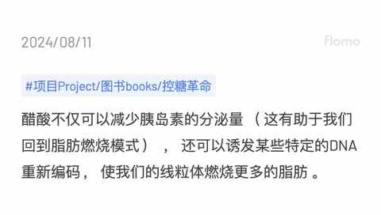
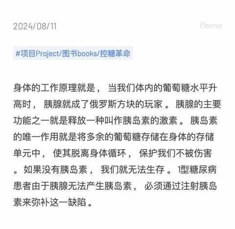
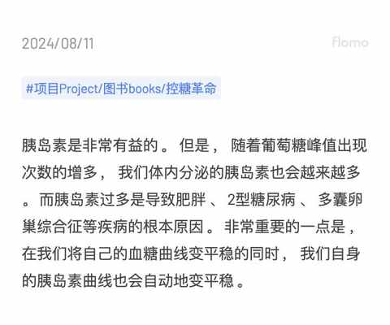
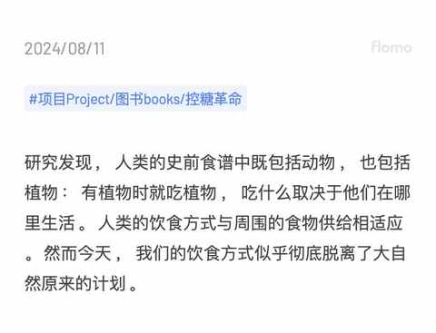
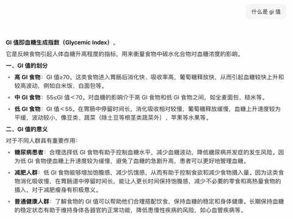
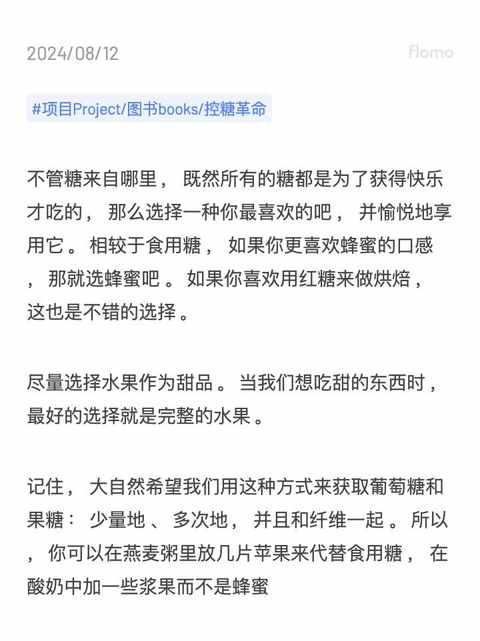
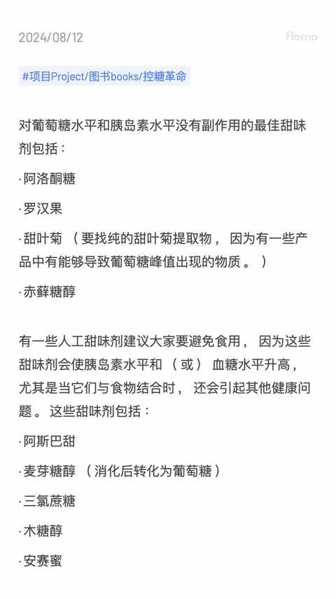
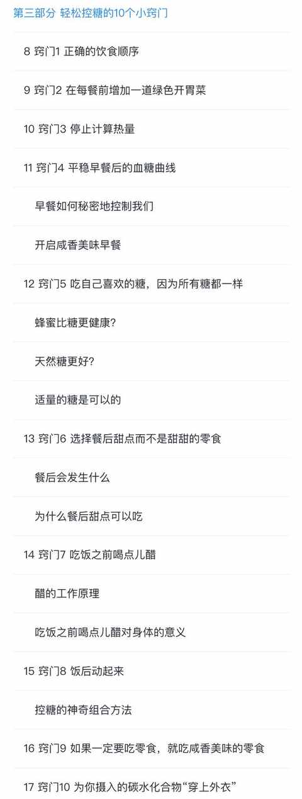

想要控糖吗？不妨先看看这本《控糖革命》！
一、为什么要控糖？
1️⃣ 预防疾病
糖尿病及心脑血管方面的疾病
2️⃣ 体重管理的需要
增强餐后的饱腹感、减少整体热量摄入等等
3️⃣ 改善皮肤状态
减少痘痘和痤疮的出现频次
4️⃣ 身心健康
避免暴饮暴食，让情绪减少波动
二、什么是《控糖革命》？

一本关于控糖方面的图书，作者是一名法国的生物化学家、营养研究员和健康科普推广人。
三、有哪些简单有效可实操的控糖方法吗？
有很多，例如下面这些随时吃饭的时候都能实操：
1️⃣ 调整吃饭时候的顺序：增加饱腹感+降低血糖峰值+稳定血糖水平
先膳食纤维类（ 蔬菜等 ），后蛋白质（ 肉类、豆制品等 ），再是碳水（米饭、面条等），最后甜点类（水果、蛋糕等）
不妨吃火锅的时候试试这种进食顺序。
2️⃣ 饭前喝点醋： 降低血糖峰值 +稳定血糖水平

倒一点醋到水杯里，然后加水，用吸管喝，避免醋腐蚀到牙齿。
书中提到比较多的醋的品种是：苹果醋。
3️⃣ 饭后轻度运动： 降低血糖峰值 +稳定血糖水平
不管是深蹲、俯卧撑、爬楼梯还是散步，通通都可以达到效果。
四、控糖的逻辑是什么？
通过各种方式让血糖更平稳，从而让胰岛素分泌趋于和缓，进而让身体更健康。
1️⃣ 涉及到身体的工作原理

2️⃣ 胰岛素不可或缺且非常有益，但过犹不及

3️⃣ 我们的饮食严重脱离初始计划

五、关于控糖有哪些冷知识？
1️⃣ 不同的人在吃同一个食物的之后的血糖值会差别巨大
例如，两个人明明都是吃的青菜包，自己吃完之后血糖很快到了一个高点且波动大，别人的血糖会很平缓且波动很小。
具体哪些食物更能让自己的血糖更稳定，需要摸索与尝试。
2️⃣ 控糖 ≠ 断糖
水果、甜品及其他高 GI 的食物都可以吃，只是要注意摄入的顺序和数量，同时最好辅助饭后运动和摄入适量的醋。
关于 GI 值，豆包给到的回复如下：

3️⃣ 所有的糖都一样，选自己喜欢的即可
当然啦，前提是要适量摄入糖。

同时也要警惕部分人工甜味剂，部分代糖可能会让血糖上升的比较高，改变肠道菌群，进而影响到身体健康。

六、建议什么样的阅读顺序？
强烈建议先从第三部分开始看，介绍的 10 个控糖小窍门肯定有某几个适合你当下的情况，能马上实践。

七 、实践书中的控糖方法之后，有哪些体会？
1️⃣ 并没有购买血糖仪测试血糖值，以体感为主
暂时觉得没必要，需要 24 小时佩戴，比较麻烦。
2️⃣ 改变进食顺序：效果显著
还是吃的一样的食物，在改变进食顺序之后，饱腹感明显更强，两餐之间想吃零食的冲动也更小。
在外面饭馆里面吃饭的时候尤其有效，特别是火锅，以往都是先吃肉，最后再吃蔬菜导致容易吃多吃撑。
3️⃣ 不追求少糖无糖：有效果，体重稳定
喝饮料的时候不会每次都买无糖的，调味品之类的也不会过分看中配料表中有哪些糖，每次控制好量，体重未上升。
4️⃣ 比较适合饭后的运动：爬楼梯 和 骑行
这两项运动于我而言会更有消食的效果，能有效缓解饱腹感。
相较而言，散步的效果就一般。
关于控糖的方式方法有很多，网络上也能查到各种博主的分享，但是具体还要靠自己去实践，作者在书中还穿插了一些控糖故事的案例，方便在阅读的时候作为自己的参考系。
希望以上的分享内容能让你对控糖产生一点点的兴趣。